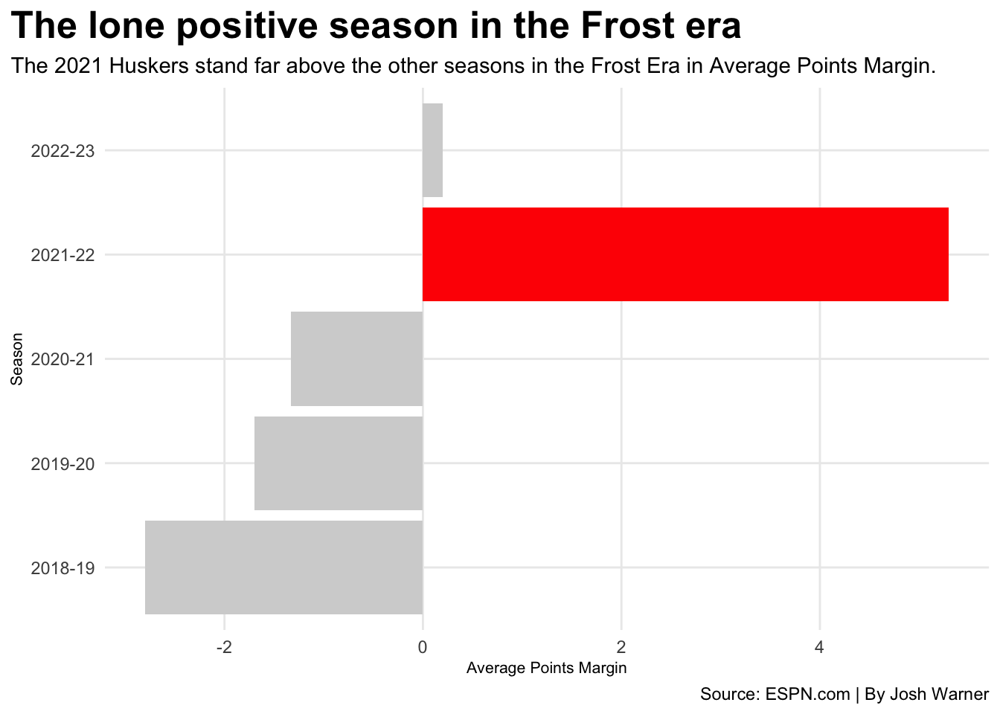

How would Scott Frost’s Nebraska tenure fare if there were only 3 quarters
scott-frost
huskers
football
Author
Josh Warner
Published
May 5, 2024
For the past two decades, Nebraska Football fans have suffered severely from mediocre football play. In 2017 fans thought they had found their savior in Coach Scott Frost. The hype surrounding him is what further led to the suffering of fans when the results were very much subpar compared to the expectations. But why? Could it be that Coach Frost is a bad coach? Probably not because UCF was very successful under him. So then what is the explanation of their failure to win? If you ask Coach Osborne and most casual fans, they’ll tell you it’s the 4th quarter.
“If you looked at the score at the end of three quarters, Scott would have had a really good record.” Osborne said.
Now is this true? If the 4th quarter was eliminated, how would the Husker’s perform under Frost? Would they finally make the coveted bowl game? Would Scott Frost have a Job still? How much different would Husker Football be?
Surprisingly not that different, The biggest change was in 2021, when the Huskers won two more games than in real life. Scott Frost would go 5-7 in the three normal seasons (2018,2019,2021) of his Nebraska tenure. Now which one of these seasons was actually the best for the Huskers if the 4th quarter was eliminated?
Code
ggplot()+geom_bar(data=Q18, aes(x=reorder(Season,AvgMarg), weight=AvgMarg), fill ="lightgrey") +geom_bar(data=Q19, aes(x=reorder(Season,AvgMarg), weight=AvgMarg), fill ="lightgrey") +geom_bar(data=Q20, aes(x=reorder(Season,AvgMarg), weight=AvgMarg), fill ="lightgrey") +geom_bar(data=Q21, aes(x=reorder(Season,AvgMarg), weight=AvgMarg), fill ="red") +geom_bar(data=Q22, aes(x=reorder(Season,AvgMarg), weight=AvgMarg), fill ="lightgrey") +coord_flip()+labs(x="Season", y="Average Points Margin", title="The lone positive season in the Frost era", subtitle="The 2021 Huskers stand far above the other seasons in the Frost Era in Average Points Margin.", caption="Source: ESPN.com | By Josh Warner" ) +theme_minimal() +theme(plot.title =element_text(size =19, face ="bold"),axis.title =element_text(size =8), plot.subtitle =element_text(size=11), panel.grid.minor =element_blank(),plot.title.position ="plot" )

And to no Husker fan’s shock, the 2021 Huskers are clearly the best team in this scenario. Most fans might remember just how close they came to winning every game that year. The 2021 season is the one season where the Husker’s had a positive scoring margin (not counting 2022, because it was only 3 games). Now, the 4th quarter played the biggest factor in 2021 out of all the other seasons, but that doesn’t mean they had a good record.
Code
logs21 |>arrange(Week) |>select(Week, Opponent,ThrQResult, ThrQPTS, ThrQOppPTS) |>gt() |>cols_label(Week ="Week",Opponent ="Opp.",ThrQResult ="Result",ThrQPTS ="Nebraska PTS",ThrQOppPTS ="Opp. PTS") |>tab_header(title="The 2021 Huskers fall just short to a bowl game", subtitle="The Iowa and Michigan games are the only changed results" )|>tab_source_note(source_note =md("**By:** Josh Warner | **Source:** ESPN.com"))|>tab_style(style =cell_text(color ="#000000", weight ="bold", align ="left"),locations =cells_title("title") )|>tab_style(style =cell_text(color ="black", align ="left"),locations =cells_title("subtitle") )|>tab_style(locations =cells_column_labels(columns =everything()),style =list(cell_borders(sides ="bottom", weight =px(3)),cell_text(weight ="bold", size=14) ) ) |>opt_row_striping() |>opt_table_lines("none") |>tab_style(style =list(cell_fill(color ="navy"),cell_text(color ="gold") ),locations =cells_body(rows = Opponent =="Michigan")) |>tab_style(style =list(cell_fill(color ="gold"),cell_text(color ="black") ),locations =cells_body(rows = Opponent =="Iowa"))
The 2021 Huskers fall just short to a bowl game
The Iowa and Michigan games are the only changed results
Week
Opp.
Result
Nebraska PTS
Opp. PTS
1
Illinois
L
16
30
2
Fordham
W
38
7
3
Buffalo
W
14
3
4
Oklahoma
L
9
16
5
Michigan St.
L
20
23
6
NW
W
49
7
7
Michigan
W
22
19
8
Minnesota
L
16
21
9
Purdue
L
17
21
10
Ohio St
L
17
23
11
Wisconsin
L
21
28
12
Iowa
W
21
9
By: Josh Warner | Source: ESPN.com
Now the two games that did change this season would very much change the trajectory of the team as two ranked wins would look very good on a bowl resume. Now would the Huskers make a bowl game this season if the 4th quarter didn’t exist? Potentially, they would definitely be invited. The only 5-7 team in a bowl game that year was Rutgers who played against No. 17 Wake Forest in a 38-10 loss. Rutgers was the replacement for Texas A&M who couldn’t compete due to COVID. Now in this scenario Rutgers would only have 4 wins to Nebraska’s 5 so ultimately Nebraska would have been invited as the replacement team, but we’ll never know if the Husker’s would accept.
Now going back to the whole three quarters thing. Coach Osborne was very much incorrect in his statement, which is surprising for someone who is such a mastermind. You would think he would’ve actually looked at the stats before saying this. Sorry Husker fans, even in a fantasy scenario the Sker’s still can’t win.